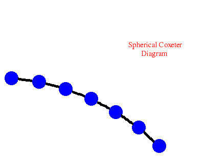

It is possible to compute the low degree (co)homology of a finite group or monoid of small order directly from the bar resolution. The following commands take this approach to computing the fifth integral homology
\(H_5(Q_4,\mathbb Z) = \mathbb Z_2\oplus\mathbb Z_2\)
of the quaternion group \(G=Q_4\) of order \(8\).
gap> Q:=QuaternionGroup(8);; gap> B:=BarComplexOfMonoid(Q,6);; gap> C:=ContractedComplex(B);; gap> Homology(C,5); [ 2, 2 ] gap> List([0..6],B!.dimension); [ 1, 7, 49, 343, 2401, 16807, 117649 ] gap> List([0..6],C!.dimension); [ 1, 2, 2, 1, 2, 4, 102945 ]
However, this approach is of limited applicability since the bar resolution involves \(|G|^k\) free generators in degree \(k\). A range of techniques, tailored to specific classes of groups, can be used to compute the (co)homology of larger finite groups.
The following example computes the fourth integral cohomomogy of the Mathieu group \(M_{24}\).
\(H^4(M_{24},\mathbb Z) = \mathbb Z_{12}\)
gap> GroupCohomology(MathieuGroup(24),4); [ 4, 3 ]
The following example computes the third integral homology of the Weyl group \(W=Weyl(E_8)\), a group of order \(696729600\).
\(H_3(Weyl(E_8),\mathbb Z) = \mathbb Z_2 \oplus \mathbb Z_2 \oplus \mathbb Z_{12}\)
gap> L:=SimpleLieAlgebra("E",8,Rationals);; gap> W:=WeylGroup(RootSystem(L));; gap> Order(W); 696729600 gap> GroupHomology(W,3); [ 2, 2, 4, 3 ]
The preceding calculation could be achieved more quickly by noting that \(W=Weyl(E_8)\) is a Coxeter group, and by using the associated Coxeter polytope. The following example uses this approach to compute the fourth integral homology of \(W\). It begins by displaying the Coxeter diagram of \(W\), and then computes
\(H_4(Weyl(E_8),\mathbb Z) = \mathbb Z_2 \oplus \mathbb Z_2 \oplus Z_2 \oplus \mathbb Z_2\).
gap> D:=[[1,[2,3]],[2,[3,3]],[3,[4,3],[5,3]],[5,[6,3]],[6,[7,3]],[7,[8,3]]];; gap> CoxeterDiagramDisplay(D);
gap> polytope:=CoxeterComplex_alt(D,5);; gap> R:=FreeGResolution(polytope,5); Resolution of length 5 in characteristic 0 for <matrix group with 8 generators> . No contracting homotopy available. gap> C:=TensorWithIntegers(R); Chain complex of length 5 in characteristic 0 . gap> Homology(C,4); [ 2, 2, 2, 2 ]
The following example computes the sixth mod-\(2\) homology of the Sylow \(2\)-subgroup \(Syl_2(M_{24})\) of the Mathieu group \(M_{24}\).
\(H_6(Syl_2(M_{24}),\mathbb Z_2) = \mathbb Z_2^{143}\)
gap> GroupHomology(SylowSubgroup(MathieuGroup(24),2),6,2); [ 2, 2, 2, 2, 2, 2, 2, 2, 2, 2, 2, 2, 2, 2, 2, 2, 2, 2, 2, 2, 2, 2, 2, 2, 2, 2, 2, 2, 2, 2, 2, 2, 2, 2, 2, 2, 2, 2, 2, 2, 2, 2, 2, 2, 2, 2, 2, 2, 2, 2, 2, 2, 2, 2, 2, 2, 2, 2, 2, 2, 2, 2, 2, 2, 2, 2, 2, 2, 2, 2, 2, 2, 2, 2, 2, 2, 2, 2, 2, 2, 2, 2, 2, 2, 2, 2, 2, 2, 2, 2, 2, 2, 2, 2, 2, 2, 2, 2, 2, 2, 2, 2, 2, 2, 2, 2, 2, 2, 2, 2, 2, 2, 2, 2, 2, 2, 2, 2, 2, 2, 2, 2, 2, 2, 2, 2, 2, 2, 2, 2, 2, 2, 2, 2, 2, 2, 2, 2, 2, 2, 2, 2, 2 ]
The following example constructs the Poincare series
\(p(x)=\frac{1}{-x^3+3*x^2-3*x+1}\)
for the cohomology \(H^\ast(Syl_2(M_{12},\mathbb F_2)\). The coefficient of \(x^n\) in the expansion of \(p(x)\) is equal to the dimension of the vector space \(H^n(Syl_2(M_{12},\mathbb F_2)\). The computation involves Singular's Groebner basis algorithms and the Lyndon-Hochschild-Serre spectral sequence.
gap> G:=SylowSubgroup(MathieuGroup(12),2);; gap> P:=PoincareSeriesLHS(G); (1)/(-x_1^3+3*x_1^2-3*x_1+1)
The additional following command uses the Poincare series
gap> RankHomologyPGroup(G,P,1000); 251000
to determine that \(H_{1000}(Syl_2(M_{12},\mathbb Z)\) is a direct sum of 251000 non-trivial cyclic \(2\)-groups.
The following example constructs the series
\(p(x)=\frac{x^4-x^3+x^2-x+1}{x^6-x^5+x^4-2*x^3+x^2-x+1}\)
whose coefficient of \(x^n\) is equal to the dimension of the vector space \(H^n(M_{11},\mathbb F_2)\) for all \(n\) in the range \(0\le n\le 14\). The coefficient is not guaranteed correct for \(n\ge 15\).
gap> PoincareSeriesPrimePart(MathieuGroup(11),2,14); (x_1^4-x_1^3+x_1^2-x_1+1)/(x_1^6-x_1^5+x_1^4-2*x_1^3+x_1^2-x_1+1)
The following example computes
\(H_4(N,\mathbb Z) = \mathbb (Z_3)^4 \oplus \mathbb Z^{84}\)
for the free nilpotent group \(N\) of class \(2\) on four generators.
gap> F:=FreeGroup(4);; N:=NilpotentQuotient(F,2);; gap> GroupHomology(N,4); [ 3, 3, 3, 3, 0, 0, 0, 0, 0, 0, 0, 0, 0, 0, 0, 0, 0, 0, 0, 0, 0, 0, 0, 0, 0, 0, 0, 0, 0, 0, 0, 0, 0, 0, 0, 0, 0, 0, 0, 0, 0, 0, 0, 0, 0, 0, 0, 0, 0, 0, 0, 0, 0, 0, 0, 0, 0, 0, 0, 0, 0, 0, 0, 0, 0, 0, 0, 0, 0, 0, 0, 0, 0, 0, 0, 0, 0, 0, 0, 0, 0, 0, 0, 0, 0, 0, 0, 0 ]
The following example computes
\(H_5(G,\mathbb Z) = \mathbb Z_2 \oplus \mathbb Z_2\)
for the \(3\)-dimensional crystallographic space group \(G\) with Hermann-Mauguin symbol "P62"
gap> GroupHomology(SpaceGroupBBNWZ("P62"),5); [ 2, 2 ]
The following example computes
\(H^5(G,\mathbb Z)= \mathbb Z\)
for an almost crystallographic group.
gap> G:=AlmostCrystallographicPcpGroup( 4, 50, [ 1, -4, 1, 2 ] );; gap> GroupCohomology(G,4); [ 0 ]
The following example computes
\(H_6(SL_2({\cal O},\mathbb Z) = \mathbb Z_2 \oplus \mathbb Z_{12}\)
for \({\cal O}\) the ring of integers of the number field \(\mathbb Q(\sqrt{-2})\).
gap> C:=ContractibleGcomplex("SL(2,O-2)");; gap> R:=FreeGResolution(C,7);; gap> Homology(TensorWithIntegers(R),6); [ 2, 12 ]
The following example computes
\(H_5(G,\mathbb Z) = \mathbb Z_3\)
for \(G\) the classical braid group on eight strings.
gap> D:=[[1,[2,3]],[2,[3,3]],[3,[4,3]],[4,[5,3]],[5,[6,3]],[6,[7,3]]];; gap> CoxeterDiagramDisplay(D);;

gap> R:=ResolutionArtinGroup(D,6);; gap> C:=TensorWithIntegers(R);; gap> Homology(C,5); [ 3 ]
The following example computes
\(H_5(G,\mathbb Z) = \mathbb Z_2\oplus Z_2\oplus Z_2 \oplus Z_2 \oplus Z_2\)
for \(G\) the graph of groups corresponding to the amalgamated product \(G=S_5*_{S_3}S_4\) of the symmetric groups \(S_5\) and \(S_4\) over the canonical subgroup \(S_3\).
gap> S5:=SymmetricGroup(5);SetName(S5,"S5"); gap> S4:=SymmetricGroup(4);SetName(S4,"S4"); gap> A:=SymmetricGroup(3);SetName(A,"S3"); gap> AS5:=GroupHomomorphismByFunction(A,S5,x->x); gap> AS4:=GroupHomomorphismByFunction(A,S4,x->x); gap> D:=[S5,S4,[AS5,AS4]]; gap> GraphOfGroupsDisplay(D);
gap> R:=ResolutionGraphOfGroups(D,6);; gap> Homology(TensorWithIntegers(R),5); [ 2, 2, 2, 2, 2 ]
There are various ways to represent a \(\mathbb ZG\)-module \(A\) with action \(G\times A \rightarrow A, (g,a)\mapsto \alpha(g,a)\).
One possibility is to use the data type of a \(G\)-Outer Group which involves three components: an \(ActedGroup\) \(A\); an \(Acting Group\) \(G\); a \(Mapping\) \((g,a)\mapsto \alpha(g,a)\). The following example uses this data type to compute the cohomology \(H^4(G,A) =\mathbb Z_5 \oplus \mathbb Z_{10}\) of the symmetric group \(G=S_6\) with coefficients in the integers \(A=\mathbb Z\) where odd permutations act non-trivially on \(A\).
gap> G:=SymmetricGroup(6);; gap> A:=AbelianPcpGroup([0]);; gap> alpha:=function(g,a); return a^SignPerm(g); end;; gap> A:=GModuleAsGOuterGroup(G,A,alpha); ZG-module with abelian invariants [ 0 ] and G= SymmetricGroup( [ 1 .. 6 ] ) gap> R:=ResolutionFiniteGroup(G,5);; gap> C:=HomToGModule(R,A); G-cocomplex of length 5 . gap> Cohomology(C,4); [ 2, 2, 5 ]
If \(A=\mathbb Z^n\) and \(G\) acts as
\(G\times A \rightarrow A, (g, (x_1,x_2,\ldots,x_n)) \mapsto (x_{\pi(g)^{-1}(1)}, x_{\pi(g)^{-1}(2)}, \ldots, x_{\pi(g)^{-1}(n)})\)
where \(\pi\colon G\rightarrow S_n\) is a (not necessarily faithful) permutation representation of degree \(n\) then we can avoid the use of \(G\)-outer groups and use just the homomorphism \(\pi\) instead. The following example uses this data type to compute the cohomology
\(H^6(G,A) =\mathbb Z_2 \oplus \mathbb Z_{6}\)
and the homology
\(H_6(G,A) =\mathbb Z_2 \)
of the alternating group \(G=A_5\) with coefficients in \(A=\mathbb Z^5\) where elements of \(G\) act on \(\mathbb Z^5\) via the canonical permutation of basis elements.
gap> G:=AlternatingGroup(5);; gap> pi:=PermToMatrixGroup(SymmetricGroup(5),5);; gap> R:=ResolutionFiniteGroup(G,7);; gap> C:=HomToIntegralModule(R,pi);; gap> Cohomology(C,6); [ 2, 6 ] gap> D:=TensorWithIntegralModule(R,pi);; gap> Homology(D,6); [ 2 ]
Suppose given a group homomorphism \(f\colon G_1\rightarrow G_2\) and a \(G_2\)-module \(A\). Then \(A\) is naturally a \(G_1\)-module with action via \(f\), and there is an induced cohomology homomorphism \(H^n(f,A)\colon H^n(G_2,A) \rightarrow H^n(G_1,A)\).
The following example computes this cohomology homomorphism in degree \(n=6\) for the inclusion \(f\colon A_5 \rightarrow S_5\) and \(A=\mathbb Z^5\) with action that permutes the canonical basis. The final commands determine that the kernel of the homomorphism \(H^6(f,A)\) is the Klein group of order \(4\) and that the cokernel is cyclic of order \(6\).
gap> G1:=AlternatingGroup(5);; gap> G2:=SymmetricGroup(5);; gap> f:=GroupHomomorphismByFunction(G1,G2,x->x);; gap> pi:=PermToMatrixGroup(G2,5);; gap> R1:=ResolutionFiniteGroup(G1,7);; gap> R2:=ResolutionFiniteGroup(G2,7);; gap> F:=EquivariantChainMap(R1,R2,f);; gap> C:=HomToIntegralModule(F,pi);; gap> c:=Cohomology(C,6); [ g1, g2, g3 ] -> [ id, id, g3 ] gap> AbelianInvariants(Kernel(c)); [ 2, 2 ] gap> AbelianInvariants(Range(c)/Image(c)); [ 2, 3 ]
A short exact sequence of \(\mathbb ZG\)-modules \(A \rightarrowtail B \twoheadrightarrow C\) induces a long exact sequence of cohomology groups
\( \rightarrow H^n(G,A) \rightarrow H^n(G,B) \rightarrow H^n(G,C) \rightarrow H^{n+1}(G,A) \rightarrow \) .
Consider the symmetric group \(G=S_4\) and the sequence \( \mathbb Z_4 \rightarrowtail \mathbb Z_8 \twoheadrightarrow \mathbb Z_2\) of trivial \(\mathbb ZG\)-modules. The following commands compute the induced cohomology homomorphism
\(f\colon H^3(S_4,\mathbb Z_4) \rightarrow H^3(S_4,\mathbb Z_8)\)
and determine that the image of this induced homomorphism has order \(8\) and that its kernel has order \(2\).
gap> G:=SymmetricGroup(4);; gap> x:=(1,2,3,4,5,6,7,8);; gap> a:=Group(x^2);; gap> b:=Group(x);; gap> ahomb:=GroupHomomorphismByFunction(a,b,y->y);; gap> A:=TrivialGModuleAsGOuterGroup(G,a);; gap> B:=TrivialGModuleAsGOuterGroup(G,b);; gap> phi:=GOuterGroupHomomorphism();; gap> phi!.Source:=A;; gap> phi!.Target:=B;; gap> phi!.Mapping:=ahomb;; gap> Hphi:=CohomologyHomomorphism(phi,3);; gap> Size(ImageOfGOuterGroupHomomorphism(Hphi)); 8 gap> Size(KernelOfGOuterGroupHomomorphism(Hphi)); 2
The following commands then compute the homomorphism
\(H^3(S_4,\mathbb Z_8) \rightarrow H^3(S_4,\mathbb Z_2)\)
induced by \(\mathbb Z_4 \rightarrowtail \mathbb Z_8 \twoheadrightarrow \mathbb Z_2\), and determine that the kernel of this homomorphsim has order \(8\).
gap> bhomc:=NaturalHomomorphismByNormalSubgroup(b,a); gap> B:=TrivialGModuleAsGOuterGroup(G,b); gap> C:=TrivialGModuleAsGOuterGroup(G,Image(bhomc)); gap> psi:=GOuterGroupHomomorphism(); gap> psi!.Source:=B; gap> psi!.Target:=C; gap> psi!.Mapping:=bhomc; gap> Hpsi:=CohomologyHomomorphism(psi,3); gap> Size(KernelOfGOuterGroupHomomorphism(Hpsi)); 8
The following commands then compute the connecting homomorphism
\(H^2(S_4,\mathbb Z_2) \rightarrow H^3(S_4,\mathbb Z_4)\)
and determine that the image of this homomorphism has order \(2\).
gap> delta:=ConnectingCohomologyHomomorphism(psi,2);; gap> Size(ImageOfGOuterGroupHomomorphism(delta));
Note that the various orders are consistent with exactness of the sequence
\(H^2(S_4,\mathbb Z_2) \rightarrow H^3(S_4,\mathbb Z_4) \rightarrow H^3(S_4,\mathbb Z_8) \rightarrow H^3(S_4,\mathbb Z_2) \) .
Consider the action of the symmetric group \(G=S_5\) on \(A=\mathbb Z^5\) which permutes the canonical basis. The action restricts to the sylow \(2\)-subgroup \(P=Syl_2(G)\). The following commands compute the cohomology transfer homomorphism \(t^4\colon H^4(P,A) \rightarrow H^4(S_5,A)\) and determine its kernel and image. The integral homology transfer \(t_4\colon H_4(S_5,\mathbb Z) \rightarrow H_5(P,\mathbb Z)\) is also computed.
gap> G:=SymmetricGroup(5);; gap> P:=SylowSubgroup(G,2);; gap> R:=ResolutionFiniteGroup(G,5);; gap> A:=PermToMatrixGroup(G);; gap> tr:=TransferCochainMap(R,P,A); Cochain Map between complexes of length 5 . gap> t4:=Cohomology(tr,4); [ g1, g2, g3, g4 ] -> [ id, g1, g2, g4 ] gap> StructureDescription(Kernel(t4)); "C2 x C2" gap> StructureDescription(Image(t4)); "C4 x C2" gap> tr:=TransferChainMap(R,P); Chain Map between complexes of length 5 . gap> Homology(tr,4); [ g1 ] -> [ g1 ]
A spherical 3-manifold is a 3-manifold arising as the quotient \(S^3/\Gamma\) of the 3-sphere \(S^3\) by a finite subgroup \(\Gamma\) of \(SO(4)\) acting freely as rotations. The geometrization conjecture, proved by Grigori Perelman, implies that every closed connected 3-manifold with a finite fundamental group is homeomorphic to a spherical 3-manifold.
A spherical 3-manifold \(S^3/\Gamma\) has finite fundamental group isomorphic to \(\Gamma\). This fundamental group is one of:
\(\Gamma=C_m=\langle x\ |\ x^m\rangle\) (cyclic fundamental group)
\(\Gamma=C_m\times \langle x,y \ |\ xyx^{-1}=y^{-1}, x^{2^k}=y^n \rangle\) for integers \(k, m\ge 1, n\ge 2\) and \(m\) coprime to \(2n\) (prism manifold case)
\(\Gamma= C_m\times \langle x,y, z \ |\ (xy)^2=x^2=y^2, zxz^{-1}=y, zyz^{-1}=xy, z^{3^k}=1\rangle \) for integers \(k,m\ge 1\) and \(m\) coprime to 6 (tetrahedral case)
\(\Gamma=C_m\times\langle x,y\ |\ (xy)^2=x^3=y^4\rangle \) for \(m\ge 1\) coprime to 6 (octahedral case)
\(\Gamma=C_m\times \langle x,y\ |\ (xy)^2=x^3=y^5\rangle \) for \(m\ge 1\) coprime to 30 (icosahedral case).
This list of cases is taken from the Wikipedia pages. The group \(\Gamma\) has periodic cohomology since it acts on a sphere. The cyclic group has period 2 and in the other four cases it has period 4. (Recall that in general a finite group \(G\) has periodic cohomology of period \(n\) if there is an element \(u\in H^n(G,\mathbb Z)\) such that the cup product \(-\ \cup u\colon H^k(G,\mathbb Z) \rightarrow H^{k+n}(G,\mathbb Z)\) is an isomorphism for all \(k\ge 1\). It can be shown that \(G\) has periodic cohomology of period \(n\) if and only if \(H^{n}(G,\mathbb Z)=\mathbb Z_{|G|}\).)
The cohomology of the cyclic group is well-known, and the cohomology of a direct product can be obtained from that of the factors using the Kunneth formula.
In the icosahedral case with \(m=1\) the following commands yield $$H^\ast(\Gamma,\mathbb Z)=Z[t]/(120t=0)$$ with generator \(t\) of degree 4. The final command demonstrates that a periodic resolution is used in the computation.
gap> F:=FreeGroup(2);;x:=F.1;;y:=F.2;; gap> G:=F/[(x*y)^2*x^-3, x^3*y^-5];; gap> Order(G); 120 gap> R:=ResolutionSmallGroup(G,5);; gap> n:=0;;Cohomology(HomToIntegers(R),n); [ 0 ] gap> n:=1;;Cohomology(HomToIntegers(R),n); [ ] gap> n:=2;;Cohomology(HomToIntegers(R),n); [ ] gap> n:=3;;Cohomology(HomToIntegers(R),n); [ ] gap> n:=4;;Cohomology(HomToIntegers(R),n); [ 120 ] gap> List([0..5],k->R!.dimension(k)); [ 1, 2, 2, 1, 1, 2 ]
In the octahedral case with \(m=1\) we obtain $$H^\ast(\Gamma,\mathbb Z) = \mathbb Z[s,t]/(s^2=24t, 2s=0, 48t=0)$$ where \(s\) has degree 2 and \(t\) has degree 4, from the following commands.
gap> F:=FreeGroup(2);;x:=F.1;;y:=F.2;; gap> G:=F/[(x*y)^2*x^-3, x^3*y^-4];; gap> Order(G); 48 gap> R:=ResolutionFiniteGroup(G,5);; gap> n:=0;;Cohomology(HomToIntegers(R),n); [ 0 ] gap> n:=1;;Cohomology(HomToIntegers(R),n); [ ] gap> n:=2;;Cohomology(HomToIntegers(R),n); [ 2 ] gap> n:=3;;Cohomology(HomToIntegers(R),n); [ ] gap> n:=4;;Cohomology(HomToIntegers(R),n); [ 48 ] gap> IntegralCupProduct(R,[1],[1],2,2); [ 24 ]
In the tetrahedral case with \(m=1\) we obtain $$H^\ast(\Gamma,\mathbb Z) = \mathbb Z[s,t]/(s^2=16t, 3s=0, 24t=0)$$ where \(s\) has degree 2 and \(t\) has degree 4, from the following commands.
gap> F:=FreeGroup(3);;x:=F.1;;y:=F.2;;z:=F.3;; gap> G:=F/[(x*y)^2*x^-2, x^2*y^-2, z*x*z^-1*y^-1, z*y*z^-1*y^-1*x^-1,z^3];; gap> Order(G); 24 gap> R:=ResolutionFiniteGroup(G,5);; gap> n:=1;;Cohomology(HomToIntegers(R),n); [ ] gap> n:=2;;Cohomology(HomToIntegers(R),n); [ 3 ] gap> n:=3;;Cohomology(HomToIntegers(R),n); [ ] gap> n:=4;;Cohomology(HomToIntegers(R),n); [ 24 ] gap> IntegralCupProduct(R,[1],[1],2,2); [ 16 ]
A theoretical calculation of the integral and mod-p cohomology rings of all of these fundamental groups of spherical 3-manifolds is given in [TZ08].
Given a \(\mathbb ZG\)-resolution \(R_\ast\) and a \(\mathbb ZG\)-module \(A\), one defines an \(n\)-cocycle to be a \(\mathbb ZG\)-homomorphism \(f\colon R_n \rightarrow A\) for which the composite homomorphism \(fd_{n+1}\colon R_{n+1}\rightarrow A\) is zero. If \(R_\ast\) happens to be the standard bar resolution (i.e. the cellular chain complex of the nerve of the group \(G\) considered as a one object category) then the free \(\mathbb ZG\)-generators of \(R_n\) are indexed by \(n\)-tuples \((g_1 | g_2 | \ldots | g_n)\) of elements \(g_i\) in \(G\). In this case we say that the \(n\)-cocycle is a standard n-cocycle and we think of it as a set-theoretic function
\(f \colon G \times G \times \cdots \times G \longrightarrow A\)
satisfying a certain algebraic cocycle condition. Bearing in mind that a standard \(n\)-cocycle really just assigns an element \(f(g_1, \ldots ,g_n) \in A\) to an \(n\)-simplex in the nerve of \(G\) , the cocycle condition is a very natural one which states that \(f\) must vanish on the boundary of a certain \((n+1)\)-simplex. For \(n=2\) the condition is that a \(2\)-cocycle \(f(g_1,g_2)\) must satisfy
\(g.f(h,k) + f(g,hk) = f(gh,k) + f(g,h)\)
for all \(g,h,k \in G\). This equation is explained by the following picture.
The definition of a cocycle clearly depends on the choice of \(\mathbb ZG\)-resolution \(R_\ast\). However, the cohomology group \(H^n(G,A)\), which is a group of equivalence classes of \(n\)-cocycles, is independent of the choice of \(R_\ast\).
There are some occasions when one needs explicit examples of standard cocycles. For instance:
Let \(G\) be a finite group and \(k\) a field of characteristic \(0\). The group algebra \(k(G)\), and the algebra \(F(G)\) of functions \(d_g\colon G\rightarrow k, h\rightarrow d_{g,h}\), are both Hopf algebras. The tensor product \(F(G) \otimes k(G)\) also admits a Hopf algebra structure known as the quantum double \(D(G)\). A twisted quantum double \(D_f(G)\) was introduced by R. Dijkraaf, V. Pasquier & P. Roche [DPR91]. The twisted double is a quasi-Hopf algebra depending on a \(3\)-cocycle \(f\colon G\times G\times G\rightarrow k\). The multiplication is given by \((d_g \otimes x)(d_h \otimes y) = d_{gx,xh}\beta_g(x,y)(d_g \otimes xy)\) where \(\beta_a \) is defined by \(\beta_a(h,g) = f(a,h,g) f(h,h^{-1}ah,g)^{-1} f(h,g,(hg)^{-1}ahg)\) . Although the algebraic structure of \(D_f(G)\) depends very much on the particular \(3\)-cocycle \(f\), representation-theoretic properties of \(D_f(G)\) depend only on the cohomology class of \(f\).
An explicit \(2\)-cocycle \(f\colon G\times G\rightarrow A\) is needed to construct the multiplication \((a,g)(a',g') = (a + g\cdot a' + f(g,g'), gg')\) in the extension a group \(G\) by a \(\mathbb ZG\)-module \(A\) determined by the cohomology class of \(f\) in \(H^2(G,A)\). See 6.6.
In work on coding theory and Hadamard matrices a number of papers have investigated square matrices \((a_{ij})\) whose entries \(a_{ij}=f(g_i,g_j)\) are the values of a \(2\)-cocycle \(f\colon G\times G \rightarrow \mathbb Z_2\) where \(G\) is a finite group acting trivially on \(\mathbb Z_2\). See for instance [Hor00] and 6.7.
Given a \(\mathbb ZG\)-resolution \(R_\ast\) (with contracting homotopy) and a \(\mathbb ZG\)-module \(A\) one can use HAP commands to compute explicit standard \(n\)-cocycles \(f\colon G^n \rightarrow A\). With the twisted quantum double in mind, we illustrate the computation for \(n=3\), \(G=S_3\), and \(A=U(1)\) the group of complex numbers of modulus \(1\) with trivial \(G\)-action.
We first compute a \(\mathbb ZG\)-resolution \(R_\ast\). The Universal Coefficient Theorem gives an isomorphism \(H_3(G,U(1)) = Hom_{\mathbb Z}(H_3(G,\mathbb Z), U(1))\), The multiplicative group \(U(1)\) can thus be viewed as \(\mathbb Z_m\) where \(m\) is a multiple of the exponent of \(H_3(G,\mathbb Z)\).
gap> G:=SymmetricGroup(3);; gap> R:=ResolutionFiniteGroup(G,4);; gap> TR:=TensorWithIntegers(R);; gap> Homology(TR,3); [ 6 ] gap> R!.dimension(3); 4 gap> R!.dimension(4); 5
We thus replace the very infinite group U(1) by the finite cyclic group \(\mathbb Z_6\). Since the resolution \(R_\ast \) has \(4\) generators in degree \(3\), a homomorphism \(f\colon R^3\rightarrow U(1)\) can be represented by a list \(f=[f_1, f_2, f_3, f_4]\) with \(f_i\) the image in \(\mathbb Z_6\) of the \(i\)th generator. The cocycle condition on \(f\) can be expressed as a matrix equation
\(Mf^t = 0 \bmod 6\).
where the matrix \(M\) is obtained from the following command and \(f^t\) denotes the transpose.
gap> M:=CocycleCondition(R,3);;
A particular cocycle \(f=[f_1, f_2, f_3, f_4]\) can be obtained by choosing a solution to the equation Mf^t=0.
gap> SolutionsMod2:=NullspaceModQ(TransposedMat(M),2); [ [ 0, 0, 0, 0 ], [ 0, 0, 1, 1 ], [ 1, 1, 0, 0 ], [ 1, 1, 1, 1 ] ] gap> SolutionsMod3:=NullspaceModQ(TransposedMat(M),3); [ [ 0, 0, 0, 0 ], [ 0, 0, 0, 1 ], [ 0, 0, 0, 2 ], [ 0, 0, 1, 0 ], [ 0, 0, 1, 1 ], [ 0, 0, 1, 2 ], [ 0, 0, 2, 0 ], [ 0, 0, 2, 1 ], [ 0, 0, 2, 2 ] ]
A non-standard \(3\)-cocycle \(f\) can be converted to a standard one using the command StandardCocycle(R,f,n,q) . This command inputs \( R_\ast\), integers \(n\) and \(q\), and an \(n\)-cocycle \(f\) for the resolution \(R_\ast\). It returns a standard cocycle \(G^n \rightarrow \mathbb Z_q\).
gap> f:=3*SolutionsMod2[3] - SolutionsMod3[5]; #An example solution to Mf=0 mod 6. [ 3, 3, -1, -1 ] gap> Standard_f:=StandardCocycle(R,f,3,6);; gap> g:=Random(G); h:=Random(G); k:=Random(G); (1,2) (1,3,2) (1,3) gap> Standard_f(g,h,k); 3
A function \(f\colon G\times G\times G \rightarrow A\) is a standard \(3\)-cocycle if and only if
\(g\cdot f(h,k,l) - f(gh,k,l) + f(g,hk,l) - f(g,h,kl) + f(g,h,k) = 0\)
for all \(g,h,k,l \in G\). In the above example the group \(G=S_3\) acts trivially on \(A=Z_6\). The following commands show that the standard \(3\)-cocycle produced in the example really does satisfy this \(3\)-cocycle condition. B
gap> sf:=Standard_f;; gap> Test:=function(g,h,k,l); > return sf(h,k,l) - sf(g*h,k,l) + sf(g,h*k,l) - sf(g,h,k*l) + sf(g,h,k); > end; function( g, h, k, l ) ... end gap> for g in G do for h in G do for k in G do for l in G do > Print(Test(g,h,k,l),","); > od;od;od;od; 0,0,0,0,0,0,0,0,0,0,0,0,0,0,0,0,0,0,0,0,0,0,0,0,0,0,0,0,0,0,0,0,0,0,0,0,0,0, 0,0,0,0,0,0,0,0,0,0,0,0,0,0,0,0,0,0,0,0,0,0,0,0,0,0,0,0,0,0,0,0,0,0,0,0,0,0, 0,0,0,0,0,0,0,0,0,0,0,0,0,0,0,0,0,0,0,0,0,0,0,0,0,0,0,0,0,0,0,0,0,0,0,0,0,0, 0,0,0,0,0,0,0,0,0,0,0,0,0,0,0,0,0,0,0,0,0,0,0,0,0,0,0,0,0,0,0,0,0,0,0,0,0,0, 0,0,0,0,0,0,0,0,0,0,0,0,0,0,0,0,0,0,0,0,0,0,0,0,0,0,0,0,0,0,0,0,0,0,0,0,0,0, 0,0,0,0,0,0,0,0,0,0,0,0,0,0,0,0,0,0,0,0,0,0,0,0,0,0,0,0,0,0,0,0,0,0,0,0,0,0, 0,0,0,0,0,0,0,0,0,0,0,0,0,0,0,0,0,0,0,0,0,0,0,0,0,0,0,0,0,0,0,6,0,6,6,0,0,6, 0,0,0,0,0,6,6,6,0,6,0,12,12,6,12,6,0,12,6,0,6,6,0,0,0,0,0,0,0,12,12,6,6,6,0, 6,6,0,6,6,0,0,-6,0,0,0,0,0,0,0,0,0,0,6,6,6,6,6,0,0,0,0,0,0,0,6,0,0,6,6,0,6,6, 0,6,0,0,6,6,6,0,0,0,0,0,0,0,-6,0,0,-6,0,-6,0,0,0,0,0,0,0,0,6,6,0,6,0,0,6,0,0, 0,0,0,6,6,6,0,0,0,6,6,6,0,0,0,0,-6,0,6,6,0,0,0,0,0,0,0,12,6,6,0,6,0,0,0,0,12, 6,0,0,0,0,0,0,0,6,6,0,0,0,0,0,0,0,0,0,0,0,0,0,0,0,0,0,0,0,0,0,0,0,0,0,0,0,0, 0,0,0,0,0,0,0,0,0,0,0,0,0,0,0,0,0,0,0,0,0,0,0,0,6,0,0,6,0,0,6,0,0,0,0,0,6,6, 6,0,0,0,6,12,6,6,0,0,0,-6,0,0,6,0,0,0,0,0,0,0,12,12,6,6,6,0,0,0,0,6,6,0,0,0, 0,0,0,0,0,0,0,0,0,0,0,0,0,0,0,0,0,0,0,0,0,0,0,0,0,0,6,0,0,6,0,6,0,0,0,0,0,0, 0,0,0,0,0,0,0,0,0,0,0,0,0,0,0,0,0,0,0,0,0,0,0,0,0,0,0,0,0,0,0,0,6,6,6,6,6,0, 6,6,0,6,6,0,12,12,6,12,12,0,0,0,0,0,0,0,6,6,0,0,0,0,6,6,6,12,12,0,-6,-6,0,0, 0,0,6,6,0,0,6,0,0,6,0,6,6,0,0,0,0,0,0,0,0,0,0,0,0,0,0,0,0,0,0,0,0,0,0,0,0,0, 0,0,0,0,0,0,0,0,0,0,0,0,0,0,0,0,0,0,6,0,6,0,0,0,0,0,0,0,0,0,0,0,0,0,0,0,6,6, 0,6,0,0,6,0,0,0,0,0,0,0,0,0,0,0,6,6,0,6,0,0,6,0,0,0,0,0,0,0,0,0,0,0,0,0,6,0, 0,0,0,0,0,0,0,0,0,0,0,0,0,0,6,0,0,6,6,0,6,6,0,6,0,0,6,6,6,0,0,0,0,0,0,0,0,0, 0,0,0,0,0,0,0,0,0,0,0,0,0,6,0,0,0,0,0,0,0,0,0,0,0,0,0,0,0,0,0,0,0,0,0,0,0,0, 0,6,6,0,0,0,0,0,0,0,0,0,0,0,0,0,0,0,0,6,6,0,0,0,0,0,0,0,6,6,0,0,0,0,0,0,0,0, 0,0,0,0,0,0,0,0,0,0,0,0,0,0,0,0,0,0,0,0,0,0,0,0,0,0,0,0,0,0,0,0,0,0,0,0,0,0, 0,0,0,0,0,0,0,0,0,0,-6,0,6,0,6,0,6,0,0,0,0,0,0,0,12,12,6,12,12,0,6,6,0,6,6,0, 0,0,0,0,0,0,12,12,6,12,12,0,6,6,0,6,6,0,0,0,0,0,0,0,0,0,0,0,0,0,6,6,6,6,6,0, 0,0,0,0,0,0,6,0,0,6,6,0,6,6,0,6,0,0,6,6,6,0,0,0,-6,0,0,0,-6,0,0,-6,0,-6,0,0, 0,0,0,0,0,0,0,0,0,0,0,0,0,0,0,0,0,0,6,6,6,6,6,0,6,6,0,0,0,0,0,0,0,6,6,0,0,0, 0,0,0,0,6,6,0,-6,0,0,-6,0,0,12,6,0,-6,-6,0,0,0,0,6,6,0,0,6,0,0,6,0,6,6,0,0,0, 0,0,0,0,0,0,0,0,0,0,0,0,0,0,0,0,0,0,0,0,0,0,0,0,0,0,0,0,0,0,0,0,0,0,0,0,0,0, 0,0,0,-6,0,0,0,0,0,0,0,0,0,0,6,6,6,6,6,0,6,12,0,6,0,0,6,0,0,0,6,0,0,0,0,0,0, 0,6,12,0,0,0,0,0,0,0,6,6,0,-6,-6,0,0,0,0,0,0,0,0,6,0,0,6,0,6,6,0,0,0,0,0,0,0, 6,0,0,0,6,0,0,6,0,6,0,0,0,0,0,0,0,0,0,0,0,0,0,0,0,0,0,0,0,0,0,0,0,0,0,0,0,6, 0,0,0,0,0,0,0,0,6,0,0,0,0,0,0,0,6,6,0,6,6,0,6,6,6,12,12,0,0,0,0,0,0,0,6,6,0, 6,6,0,6,6,6,12,12,0,0,0,0,0,0,0,6,6,0,0,6,0,0,6,0,6,6,
generated by GAPDoc2HTML